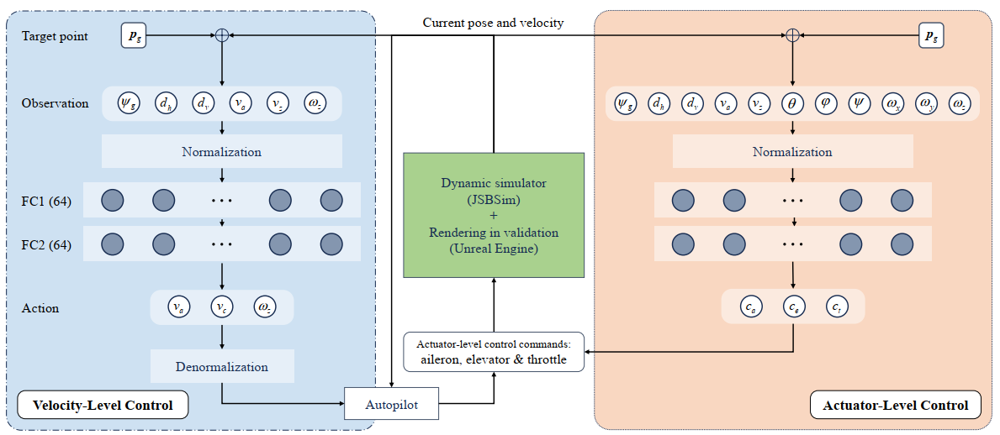
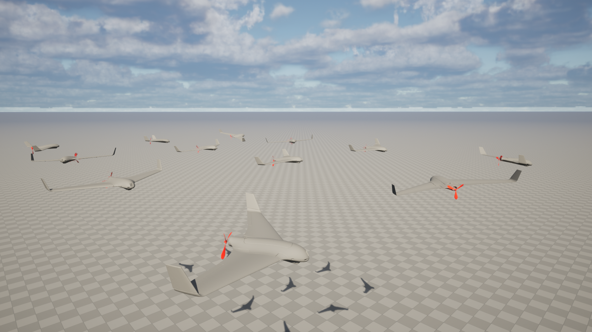
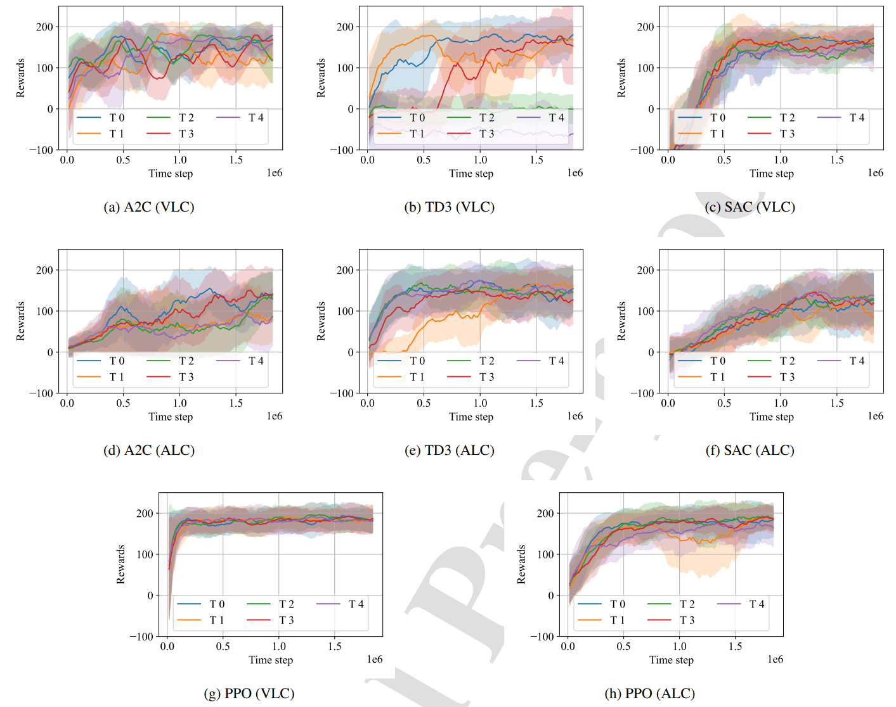
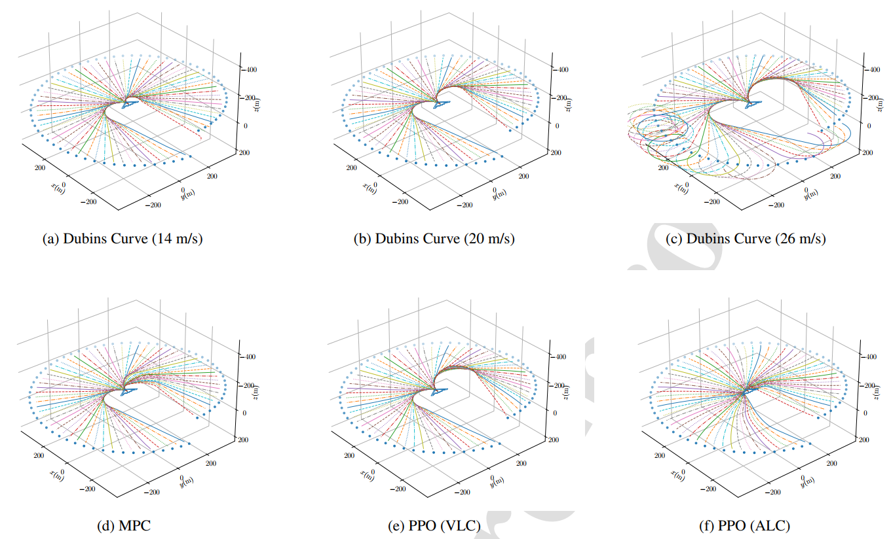
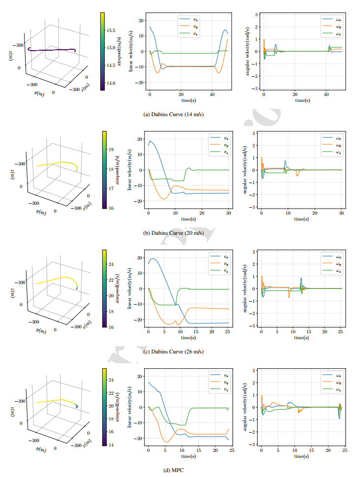
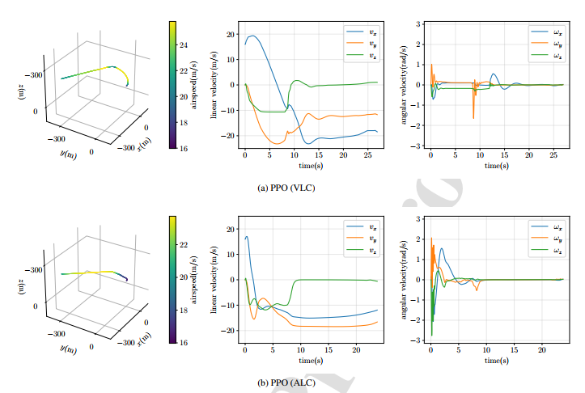

| 论文标题 | Learning minimum-time flight control for fixed-wing UAVs in three-dimensional space with high-fidelity 6-DOF dynamics（基于高保真六自由度动力学的固定翼无人机最短时间飞行控制学习） |
| 作者 | Guanzheng Wang（王冠政）、Xiangke Wang（王祥科）、Xiaoxin Li（李啸鑫）、Zhihong Liu（通讯作者）（刘志宏）、Zhiqiang Miao（缪志强） |
| 单位 | 国防科技大学（National University of Defense Technology, NUDT），智能科学学院 / 装备状态感知与智能保障全国重点实验室；湖南大学（Hunan University），电气与信息工程学院 |
| 发表信息 | Journal of Automation and Intelligence (JAI)，2025年（Received: 2025-07-29 | Revised: 2025-11-05 | Accepted: 2025-11-23） |
| DOI / 链接 | 10.1016/j.jai.2025.11.007 | 开源代码：github.com/running-mars/OpenFlight |
| 一句话摘要 | 提出速度级控制（VLC）和执行器级控制（ALC）两种强化学习框架，在 JSBSim 高保真 6-DOF 固定翼无人机（Skywalker X8）动力学环境中训练 PPO/A2C/TD3/SAC 策略，以最短飞行时间为目标实现三维空间点对点飞行。PPO-ALC 相比传统 PID+Dubins 曲线方法平均飞行时间减少 27.6%，且展现出强大的泛化能力与控制稳定性。首次在强化学习框架下实现固定翼无人机执行器级最短时间飞行控制。 |
| 灵感来源 | → 启发产生的洞察 | 类型 |
|---|---|---|
| 四旋翼竞速中的端到端 RL（Kaufmann et al. 2023, Nature） | → 四旋翼可以通过 RL 直接从视觉/状态观测映射到电机指令，超越人类冠军级水平。固定翼 UAV 虽然动力学更复杂（欠驱动 + 强耦合），但端到端 RL 的思路同样适用——关键在于高保真仿真环境和合适的观测/动作空间设计 | 架构 |
| Dubins 曲线 + PID 的局限性（Ghadiry et al. 2020） | → Dubins 曲线假设恒定速度，但固定翼 UAV 在三维空间中的爬升-空速耦合使恒定速度策略在某些目标点（低空/高空）根本无法到达。RL 策略可以通过环境交互学习这种耦合关系，在需要快速爬升时自动加速、需要急转弯时自动减速——这是预设路径规划做不到的 | 方法 |
| 高保真 JSBSim 动力学（Gryte et al. 2018, Skywalker X8） | → 基于风洞实验+CFD 的 Skywalker X8 气动模型能够真实反映固定翼 UAV 在机动飞行中的非线性特性（失速、耦合、饱和）。在如此高保真环境中训练的 RL 策略，其 sim-to-real 差距远小于简化质点模型 | 数据 / 仿真 |
| VLC vs ALC 的双层架构设计 | → VLC（输出速度指令）更容易训练收敛——因为动作空间更抽象、更平滑，适合作为 baseline。ALC（直接输出舵面指令）虽然训练更难（收敛方差更大），但性能上限更高——因为不再受 PID 安全阈值的限制，可以完全释放 UAV 的机动潜力 | 策略 |
flowchart LR
subgraph IN["输入"]
TGT["随机目标点"]
OBS["归一化观测"]
end
subgraph NET["策略网络"]
FC["FC64-ReLU-FC64"]
end
subgraph ACT["动作接口（本文创新）"]
VLC["VLC：速度级"]
PID["PID → 舵面"]
ALC["ALC：直驱舵面"]
end
subgraph ENV["JSBSim 6-DOF"]
SIM["X8 气动 + RK4"]
end
TGT -->|"相对位置"| OBS
OBS -->|"6 维 / 11 维"| FC
FC -->|"速度指令"| VLC
VLC -->|"跟踪误差"| PID
FC -->|"舵面直出"| ALC
PID -->|"舵面"| SIM
ALC -->|"直驱"| SIM
classDef proc fill:#e8f0fe,stroke:#3b82f6,stroke-width:2px,color:#1d4ed8
classDef act fill:#e6f7ee,stroke:#10b981,stroke-width:2px,color:#047857
classDef env fill:#f0ebfd,stroke:#8b5cf6,stroke-width:2px,color:#6d28d9
class TGT,OBS,FC proc
class VLC,PID,ALC act
class SIM env
配色：蓝色 = 观测与策略网络，绿色 = 本文创新的动作接口，紫色 = JSBSim 高保真环境。两条路共用同一个 FC(64)-ReLU-FC(64) 策略，差别只在动作语义的粒度：VLC 输出期望偏航角速率、爬升率、空速，必须再过一层 PID 才能变成舵面，这段级联带来时延与信息损失；ALC 直接输出副翼、升降舵、油门，把 PID 整个拿掉，让策略自己去用舵面。观测也随之不同——VLC 只要 6 维（相对位置 3 + 速度 3），ALC 要 11 维（再加姿态角与机体角速率），因为直驱舵面必须知道当前姿态。实验的结论就写在这条绿色分叉上：ALC 只有 PPO 能收敛，但收敛后飞行时间比 VLC 少 22.0%、比传统控制器少 27.6%。
flowchart LR
OBS["观测 o_t"] --> FC["策略网络"]
FC -->|"动作 a_t"| ACT["反归一化"]
ACT --> SIM["JSBSim 6-DOF"]
SIM -->|"s_t+1, r_t"| REW["奖励 + 终止"]
SIM -.->|"下一观测"| OBS
REW --> BUF["经验缓冲"]
BUF --> UPD["策略更新（4 算法）"]
UPD -.->|"下发 θ"| FC
classDef obs fill:#fef7ed,stroke:#f59e0b,stroke-width:2px,color:#92400e
classDef net fill:#e8f0fe,stroke:#3b82f6,stroke-width:2px,color:#1d4ed8
classDef sim fill:#f0ebfd,stroke:#8b5cf6,stroke-width:2px,color:#6d28d9
classDef upd fill:#ffeaf0,stroke:#f43f5e,stroke-width:2px,color:#be123c
class OBS obs
class FC,ACT net
class SIM,REW sim
class BUF,UPD upd
闭环只有两处虚线，但它们是整篇论文的实验骨架。实线一圈：观测经 tanh + 线性缩放归一化后进网络，输出 [-1,1] 的动作，反归一化成 VLC 的速度指令或 ALC 的舵面指令，交给 JSBSim 的 6-DOF 积分（Skywalker X8 气动表，30 Hz、Δt = 33 ms）推进一步，同时算出单步奖励 r = 0.25·Δd_h + 1·Δd_v + 20·Δψ 并判定终止（高度越界 / 到达 / 超时 / 角速率超限）。虚线一把新状态变成下一帧观测；虚线二把更新后的 θ 下发回策略——多进程并行采样聚成经验，A2C / TD3 / SAC / PPO 在同一超参下各跑 5 次，这一条边正是"四种算法、两种动作粒度"全部对比的公共接口。部署时只保留实线的前半段：归一化 + 策略 + 反归一化。
| 类别 | 内容 | 维度 |
|---|---|---|
| 输入（观测） | 目标相对方位偏差 Delta_psi、水平距离 d_h、高度差 Delta_h；UAV 自身空速 v_a、NED 垂直速度 v_z；姿态角 (roll phi, pitch theta, yaw psi)；角速率 (p, q, r) | 11 维连续向量（VLC 仅用前 6 维） |
| 输出（VLC） | 期望偏航角速率 psi_dot in [-0.5, 0.5] rad/s、期望爬升率 v_dot_c in [-6, 6] m/s、期望空速 v_a in [14, 26] m/s | 3 维连续动作（经 PID 转换为舵面指令） |
| 输出（ALC） | 副翼 delta_a in [-1, 1]、升降舵 delta_e in [-1, 1]、油门 delta_t in [0, 1] | 3 维连续动作（直驱舵面，不经过PID） |
| 目标 | 在 40s（VLC）/ 50s（ALC）时限内、最低安全高度 10m 约束下，以最短时间到达距目标点 30m 范围内的三维空间位置 | 标量：飞行时间（秒） |
这是一个连续控制 + 最短时间最优控制问题。不同于姿态跟踪（维持参考信号）或路径跟踪（沿预设轨迹），本文的任务是自由探索三维空间中的最优飞行轨迹——策略不仅决定"怎么飞"（控制），还隐式地决定了"飞什么路径"（规划）。平台：Skywalker X8 固定翼 UAV（高保真 JSBSim 模型，翼展 2.1m，起飞重量 ~2.5kg），场景：三维空间点对点飞行（64 个不同方向和高度目标点），任务：在安全约束下最小化到达时间。本质上是将路径规划+轨迹跟踪+底层控制三者统一为端到端 RL 策略。
⚠ 表头用英文，正文用中文
| Prior Method | Core Idea | Why It Fails |
|---|---|---|
| Dubins Curve + PID（传统路径规划 + 跟踪控制） | 用 Dubins 曲线（最小转弯半径约束下的最短路径）规划二维航迹，扩展到三维后以恒定巡航速度跟踪，底层 PID 控制舵面和油门 | 恒定速度假设是致命缺陷：在 14 m/s 时 UAV 爬升不足，无法到达高空目标点；在 26 m/s 时转弯半径过大且爬升过快，无法到达低空目标点。Dubins 曲线的"最优性"仅在恒定速度假设下成立，而实际飞行中最优速度是时变的——加速爬升、减速转弯、俯冲加速，这种变速策略远超 Dubins 的表达能力。PID 的安全阈值进一步限制了机动性能。 |
| Model Predictive Control（MPC，基于简化质点模型） | 利用简化的独轮车运动学模型（unicycle model）进行在线滚动优化，以 30Hz 频率求解带约束的最优控制问题（SLSQP 求解器） | MPC 使用了简化运动学模型而非完整 6-DOF 动力学——忽略了姿态动力学、气动耦合和非线性效应。虽然平均飞行时间（25.50s）优于 Dubins+PID（27.94s），但无法体现"急转弯减速、俯冲加速"等充分利用气动特性的机动。此外，MPC 需要在线求解优化问题，计算开销大——本文只是为了对比而实现的简化版本。接近目标点时 MPC 的速度出现波动（Fig.5d），说明简化模型在精确接近阶段精度不足。 |
| RL-based Attitude Control（PPO/DQN/DDPG 姿态控制） | 用 RL 替代内环 PID，控制固定翼 UAV 的 pitch/roll 姿态角或航向角，使其跟踪预设的参考信号（如 Bohn et al. 2023, Chowdhury & Keshmiri 2024） | 这些工作将 RL 局限在替代单个控制回路——整体架构仍然是"规划 -> 跟踪 -> 执行"的多层结构。优化目标是跟踪误差而非飞行时间。RL 策略没有机会去"探索更快的飞行方式"，只能在给定的参考轨迹框架内进行局部优化。本质上是把 RL 当作一个更好的 PID 来用——而不是让 RL 重新定义"什么是最优飞行"。 |
| RL-based Navigation（DDPG/SAC 导航控制） | 用 RL 同时控制 UAV 的航向、高度和速度以到达目标点（如 Zhang et al. 2021, Zhou et al. 2024） | 虽然超越了单纯姿态控制的范畴，但优化目标通常是最小化跟踪误差或到达成功率，而非最小化飞行时间。且大多数工作使用简化动力学模型（3-DOF 质点模型），未在高保真 6-DOF 环境中验证。SAC+APF（Zhou et al.）虽然改进了轨迹平滑性，但人工势场的引入实际上限制了策略的自由度——某些"看起来不光滑但更快"的机动轨迹被排除在搜索空间之外。 |
本文的方法论核心不是提出新的 RL 算法，而是在统一的 POMDP + RL 框架下，系统性地设计并比较两种控制层级（VLC vs ALC），并通过四种 SOTA 算法的基准测试，找出能够稳定解决"高保真 6-DOF 固定翼 UAV 最短时间飞行"这一难题的最佳组合。关键设计要素包括：（1）观测空间的选择与归一化策略；（2）动作空间的语义层级设计；（3）奖励函数的 shaping 策略；（4）终止条件的精心设置。以下逐一拆解。
| 参数 | 取值 | 含义 | 为什么取这个值 |
|---|---|---|---|
| 网络结构 | 2层 FC，每层 64 神经元 | 策略网络（actor）的隐藏层配置，ReLU 激活 | 在模型复杂度和训练效率之间取得平衡——64 神经元足以捕获状态-动作之间的非线性映射，又不会因参数过多导致过拟合或训练过慢。2 层结构是连续控制 RL 的常见基线选择 |
| 控制频率 | 30 Hz（每步 33ms） | 策略推理和 JSBSim 仿真步进频率 | 匹配 JSBSim 的默认仿真步长。30Hz 对于固定翼 UAV 的飞行控制是足够的——舵机响应时间（~50ms）限制了更高的频率的实际意义 |
| 目标点采样分布 | r~U(d-50, d+50), theta~U(81deg, 99deg), phi~U(-180deg, 180deg) | 球坐标参数：径向距离、仰角、方位角的连续均匀分布 | 确保训练数据的多样性——目标点分布在两个球面之间，覆盖不同距离、高度和方向。仰角范围（81deg~99deg 即 +/-9deg 从水平面）确保目标点高度在合理范围内 |
| 到达距离阈值 epsilon | 30 m | 判定 UAV 已到达目标点的欧氏距离上限 | 考虑到 UAV 翼展 ~2.1m 和 GPS 定位精度，30m 是合理的"到达"标准。太严（如 5m）会导致策略难以收敛，太松（如 100m）则任务失去意义 |
| 最高飞行时限 | 40 s (VLC) / 50 s (ALC 评估) | 单次飞行的最大允许时间 | 考虑到目标距离 ~500m 和飞行速度 14~26 m/s，理论最短时间约 20~36s。40~50s 的时限为策略留出了合理的探索余量，同时避免了无意义的漫长飞行 |
| 并行环境数量 | 多进程 Vectorized Envs | 利用 Stable-Baselines3 的向量化环境同时运行多个 UAV 实例 | 集中训练 + 分散执行范式——每个 UAV 独立与环境交互，经验聚合后统一更新策略。大幅提升采样多样性和训练效率 |
理解 OpenFlight 需要掌握四个关键基础原理：POMDP 形式化与 RL 最优控制（为什么将飞行控制建模为序列决策问题）、PPO 算法原理（为什么 PPO 在 ALC 任务中独家成功）、固定翼 6-DOF 动力学耦合原理（为什么固定翼难于四旋翼）、奖励函数 shaping 原理（如何将"最短时间"转化为可学习的密集信号）。
POMDP 建模的工程意义：传统控制方法（PID、MPC）假设"状态完全已知"，在此基础上设计控制律。但实际飞行中，许多状态变量（如侧滑角、实时气动参数）是无法精确测量的。将问题建模为 POMDP 意味着策略从一开始就接受"信息不完整"这一现实，并在训练过程中学会如何用有限观测（11 维归一化向量）做出接近最优的决策——这比传统方法"先假设全知再补偿不确定性"的方式更加鲁棒。
| 对比维度 | PPO (On-Policy) | TD3 / SAC (Off-Policy) |
|---|---|---|
| 数据来源 | 仅使用当前策略采集的最新数据——每轮更新后旧数据全部丢弃 | 使用经验回放缓冲区（Replay Buffer）——保存数百万步的历史数据用于训练 |
| 对动作空间敏感度的鲁棒性 | 高——因为训练数据始终与当前策略分布一致，不存在"分布偏移"问题 | 低——当策略变化剧烈时（ALC 的特点），缓冲区中的旧数据来自完全不同的策略分布，导致 Q 值估计系统性偏差 |
| 样本效率 | 较低——每轮数据只用一次就丢弃，需要大量环境交互 | 较高——每一条经验可以被反复使用多次 |
| 训练稳定性 | 高——clipped objective 保证每次更新幅度可控 | 中等至低——Q 值过估计（overestimation bias）是高维动作空间的常见问题 |
| 在 ALC 中的表现 | 成功收敛，控制信号平滑，无振荡 | 全部失败——SAC 无法到达目标，TD3 性能劣于 VLC，A2C 坠机 |
为什么只有 PPO 成功？—— 一个来自控制理论的直觉解释：ALC 的动作空间是"高带宽"的——副翼和升降舵的微小变化（如 0.01 rad 偏转）会在数秒内被气动力放大为米级的轨迹偏差。这意味着动作空间的 Lipschitz 常数非常大——策略输入的微小扰动会导致输出轨迹的巨大变化。Off-policy 算法（TD3/SAC）试图从历史数据中学习 Q 值，但 ALC 环境中，历史数据可能来自一个"已经不存在的策略"，其 Q 值估计对当前策略毫无参考价值——这就像用昨天的天气数据预测明天的台风路径。PPO 的 on-policy 特性确保了"训练数据始终新鲜"——每次更新只使用当前策略刚采集的数据，从根本上解决了分布偏移问题。此外，clip 机制提供的隐式 trust-region 约束确保了在高灵敏度动作空间中，策略不会在一次更新中更新幅度过大导致训练崩溃。
奖励 shaping 与稀疏奖励的对比：如果使用稀疏奖励（仅在到达目标时给予 +1，其他时间步给予 0），在连续控制环境中策略将面临"探索瓶颈"——在到达目标之前，数万个时间步中没有任何学习信号，策略等同于随机游走。Shaped reward 将"到达目标"这一远期目标分解为"缩短水平距离 + 缩短垂直距离 + 对准航向"三个每步都可测量的子目标——即便在训练早期策略很差时，UAV 至少能"感觉到"自己是否在向目标靠近。这就是为什么四种 RL 算法在 VLC 中全都能收敛——shaped reward 降低了探索难度。
📷 论文原图截图。图片保存至 figures/ 子目录。命名 fig1.png ~ fig6.png 即可自动显示。

📷 请将截图保存为figures/fig1.png本图展示了：OpenFlight 系统的完整学习流程——从目标点设定、观测提取与归一化、策略网络推理（FC(64)-ReLU-FC(64)）、动作输出（VLC 输出速度指令需反归一化 + PID 转换，ALC 直接输出舵面指令）、到 JSBSim 6-DOF 动力学仿真和 UE5 可视化渲染。训练时 UE5 可禁用以加速。

📷 请将截图保存为figures/fig2.png本图展示了：基于 Stable-Baselines3 Vectorized Envs 的多进程并行训练架构。每个 UAV 实例独立与 JSBSim 环境交互，经验聚合到中央 buffer 后统一优化策略——这是典型的"集中训练 + 分散执行"（Centralized Training with Decentralized Execution, CTDE）范式。

📷 请将截图保存为figures/fig3.png本图展示了：整篇论文最核心的实验结果。8 个子图分别对应 4 种算法在 VLC 和 ALC 两个任务上的奖励曲线（T0~T4 表示 5 次独立训练）。

📷 请将截图保存为figures/fig4.png本图展示了：6 种方法（Dubins 14m/s、20m/s、26m/s；MPC；PPO-VLC；PPO-ALC）在 64 个不同方向和高度的目标点上的三维飞行轨迹。UAV 初始位置在 (0, 0, -100)m，蓝色点为目标点。这张图是"一张图讲完泛化性对比故事"的典型范例。

📷 请将截图保存为figures/fig5.png本图展示了：针对 (-300, -400, -180)m 这一困难目标点（包含转弯、爬升和直飞段），三种恒定速度 Dubins 方案和 MPC 方案的飞行轨迹、空速曲线和角速率曲线。轨迹颜色表示该时刻的空速。

📷 请将截图保存为figures/fig6.png本图展示了：PPO 训练的 VLC 和 ALC 策略在同一目标点 (-300, -400, -180)m 的表现。这是论文最具说服力的一组对比——两种策略都在飞行中展示了变速能力（空速随飞行阶段变化），但 ALC 的机动性远胜于 VLC。
| 数据问题 | 潜在困难 | 严重程度 |
|---|---|---|
| 气动参数与实际平台的偏差 | JSBSim 中的 Skywalker X8 模型基于标准大气条件和理想机身状态。实际 UAV 的机身可能因维修、改装、载荷变化而导致气动特性偏移。RL 策略对气动参数敏感——策略在仿真中学会的"精准机动"可能在真实平台上因为气动偏差而变成"危险机动" | ★★★★★ |
| 训练随机种子敏感性（PPO ALC 的方差） | Fig.3h 中 PPO-ALC 的 5 次训练（T0~T4）奖励曲线存在明显差异——说明即便 PPO 是最优算法，其对初始条件和随机种子仍有一定敏感性。在生产部署中，可能需要多次训练取最优策略——增加了时间成本 | ★★★★ |
| 环境风扰动的缺失 | 论文未提及在仿真中引入风扰动（阵风、湍流、风切变）。引言中强调了"严重的大气扰动"作为挑战，但实验部分似乎仅在无风/理想条件下进行。在真实大气中，RL 策略的稳定性和鲁棒性可能大幅下降 | ★★★★ |
| 目标点分布范围的局限性 | 评估仅在距离 500m、高度 20~180m 的 64 个点进行。未测试更远距离（如 2~5 km）、更高高度（>500m）或极端方向（如正上方/正下方）的泛化能力。策略在这些未见过区域的表现未知 | ★★★ |
| 参考文献 | 为什么重要 |
|---|---|
| Kaufmann et al. (2023) — Champion-level drone racing using deep reinforcement learning. Nature 620, 982-987 | RL 在无人机竞速领域的里程碑——首次证明端到端 RL 可以在高敏捷性飞行任务中超越人类专家。本文（OpenFlight）的四旋翼竞速灵感直接来源于此。核心区别：固定翼 vs 四旋翼的动力学复杂度差异，使得固定翼的端到端 RL 更具挑战性 |
| Bohn et al. (2023) — Data-efficient deep reinforcement learning for attitude control of fixed-wing UAVs: Field experiments. IEEE Trans. Neural Netw. Learn. Syst. 35(3), 3168-3180 | 少数几个将 RL 固定翼控制推进到实飞验证阶段的工作——使用 PPO 和 SAC 进行姿态控制并在真实 Skywalker X8 上飞行。本文可以看作是在此工作基础上的扩展——从姿态跟踪升级到最短时间飞行，但仍停留在仿真阶段 |
| Chowdhury & Keshmiri (2024) — Interchangeable reinforcement-learning flight controller for fixed-wing UASs. IEEE Trans. Aerosp. Electron. Syst. 60(2), 2305-2318 | PPO 在固定翼 UAV 全舵面控制上的代表性工作——与本文的 ALC 设定相似但目标是通用飞行控制而非最短时间。对比阅读可以深入了解 PPO 在固定翼控制中的普适性 |
| Gryte et al. (2018) — Aerodynamic modeling of the Skywalker X8 fixed-wing unmanned aerial vehicle. ICUAS, 826-835 | Skywalker X8 气动模型的原始文献——理解 JSBSim 中 UAV 动力学参数的来源和精度。如果计划在本环境基础上做研究，这篇是必读的"数据来源说明" |
| Schulman et al. (2017) — Proximal policy optimization algorithms. arXiv:1707.06347 | PPO 原始论文——理解为什么 PPO 在 ALC 任务中独家成功的关键：clipped surrogate objective 提供的 trust-region 约束在高度敏感的动作空间中是不可替代的 |
| Song et al. (2023) — Reaching the limit in autonomous racing: Optimal control versus reinforcement learning. Sci. Robot. 8(82), eadg1462 | 从另一个角度探讨"RL vs 最优控制"的极限问题——在四旋翼竞速中，RL 能否达到最优控制的性能边界？本文（OpenFlight）加入了 MPC 作为对比，但 MPC 使用的是简化模型。如果用全 6-DOF 非线性 MPC（如 ACADO/iLQR），结果会如何？这是一个开放的对比问题 |
对象：Learning minimum-time flight control for fixed-wing UAVs in three-dimensional space with high-fidelity 6-DOF dynamics（OpenFlight，J. Automation and Intelligence，DOI 10.1016/j.jai.2025.11.007，Journal Pre-proof，20 页）。公式范围：正文全部编号公式 (1)–(13)（§3.1–§3.6），加上 Fig.1 的网络结构、§3.2/§3.7/§4.2 中以文字描述但无编号的核心方法（JSBSim 气动模型、PPO/A2C/TD3/SAC、底层 PID 链、MPC、3D Dubins），本节把它们全部数学化。方法：本文不是复述论文文字，而是：
running-mars/OpenFlight，本机副本在 1.Paper\OpenFlight\OpenFlight\，下同）逐行交叉验证，所有「代码 L 行」均指该仓库文件；诚实声明（公式原文的核对方式）：本推导所用公式原文来自两份独立的 PDF 文本抽取——工作目录的 _derivation_work\openflight\fulltext.txt 与本次新建的 pdftext.txt（pypdf 抽取），两份在全部 13 个公式上逐字符一致。生成本节的模型不具备图像输入能力，无法直接阅读 pages\page-001.png…page-020.png，因此矩阵/分式的排版结构未能逐像素核对；建议人工复核以下页码：PDF 第 5 页（式 (1)–(6)，其中式 (6) 的 3×3 矩阵元素排列最关键）、第 6 页（式 (7)–(12)）、第 7 页（式 (13) 与 Fig.1）。凡下文判定为「印刷错误」处，均以「两份文本抽取一致 + 代数推导不自洽」双条件为据，并已尽量与代码互证。
| 公式 | 内容 | 结论（推导 + 代码 + 数值三重对照） |
|---|---|---|
| (1) | 最短时间飞行问题 | ✅ 约束值与代码一致（$h_{\min}=10$ m、$d_r=30$ m、时限 40 s）。⚠️ 自称 POMDP 但观测是状态的确定性函数（实际是 MDP）；决策变量写成 $\min_{a_t}t_f$ 记号不规范 |
| (2)(3) | 6-DOF 牛顿–欧拉方程 | ✅ 标准形式正确；独立推导与 JSBSim 求解结构一致。⚠️ 未给分量形式、惯性矩阵数值与坐标约定 |
| (4) | 力/力矩分解 | ✅ 成立。⚠️ 论文列出推力力矩 $\boldsymbol M_t$，但所用模型推力过重心且无推力线角，实际 $\boldsymbol M_t=0$ |
| (5)(6) | 风轴→体轴气动力变换 | ✅ 矩阵代数正确：$\boldsymbol R_b^w=R_y(-\alpha_a)R_z(-\beta_s)$（已逐元素验证）。⚠️ 隐含侧滑角约定 $\beta_s=-\sin^{-1}(v/V)$，与标准/JSBSim 约定反号——照抄式 (6) 而用标准 $\beta$ 计算会得到侧力反号（陷阱，详见 §4.3） |
| (7)(8) | VLC 观测与归一化 | ✅ 归一化系数与代码逐项一致（$\alpha_1..\alpha_4=0.01,0.02,0.05,0.1$，$\beta_1=20$）。⚠️ 代码中分量顺序为 $[\psi_g,d_h,d_v,\omega_z,v_a,v_z]$ 与式 (7) 不同；note 第 6 节的「Δψ/2、ψ̇/4」是笔误，正确为 $\psi_g/(2\pi)$、$\omega_z/(4\pi)$ |
| (9)(10) | VLC 动作与反归一化 | ❌ 式 (9) 与式 (10) 自相矛盾：式 (9) 写 $\boldsymbol a=[\omega_z,v_c,v_a]$，但式 (10) 的 $\boldsymbol a_d[2]=6\boldsymbol a[2]+20$ 是空速映射（代码证实 $\boldsymbol a[2]$ 是空速），正确顺序应为 $[\omega_z,v_a,v_c]$。⚠️ $\alpha_5=0.5$（偏航缩放）在发布代码中不存在——代码把 $a[0]$ 当作「航向偏差×180°」送入航向 PI 环。note 第 6 节的 Eq.(6) 同样把 $v_c$ 与 $v_a$ 标反了 |
| (11)(12) | ALC 观测与归一化 | ✅ 归一化（姿态 $/2\pi$、角速率 $/4\pi$）与代码逐项一致。⚠️ $\theta$ 标 (roll)、$\phi$ 标 (pitch) 与航空惯例相反；代码顺序 [pitch, roll, yaw] 与论文错位（归一化相同，无功能影响） |
| (13) | 奖励函数 | ✅ 与代码逐项一致（$k_1=0.25,k_2=1,k_3=20$）。深层推导：$r_t$ 是势函数 $\Phi=0.25d_h+d_v+20|\psi_g|$ 的差分 $r_t=\Phi(s_{t-1})-\Phi(s_t)$，未折扣收益路径无关；「最短时间」完全靠折扣 $\gamma$ 涌现（§8 给出完整推导与 $\approx$180 数值验算） |
| Fig.1 网络 | 2×64 FC + ReLU | ✅ 与 network/p2p3d_net.py 逐行一致（SB3 再外接 actor/critic 头） |
| 算法 | PPO/A2C/TD3/SAC、MPC、Dubins、PID 链 | 论文无伪代码；本节给出 PPO 完整推导、其余按论文文字 + 代码重建（重建处均如实标注假设） |
| Table 1 | 平均飞行时间 | ✅ 22.0% 与 27.6% 两个百分数验算通过；PPO-ALC 20.24 s 距运动学时间下界 $(500-30)/26=18.1$ s 仅差 12%（§13.3） |
get_local_position_m() 返回 $[x_{\text{北}},\ y_{\text{东}},\ z_{\text{高度(向上)}}]$，即 $z_{\text{NED}}=-z_{\text{代码}}$。x8\x8.xml，Gryte et al. 2018 风洞数据）| 符号 | 含义 | 取值 | 单位 |
|---|---|---|---|
| $m$ | 空机质量 | 3.3640 | kg |
| $S$ | 机翼参考面积 | 0.75 | m² |
| $b$ | 翼展 | 2.10 | m |
| $\bar c$ | 平均气动弦长 | 0.3571 | m |
| $I_{xx}, I_{yy}, I_{zz}$ | 转动惯量 | 1.2290 / 0.1702 / 0.8808 | kg·m² |
| $I_{xz}$ | 交叉惯量（飞翼后掠显著不为零） | 0.9343 | kg·m² |
| $\delta_e,\delta_a$ | 升降舵/副翼偏转范围 | ±30°（±0.52 rad） | rad |
| $P_{\text{max}}$ | 电机功率（electric800W.xml 声明值） | 8.0（⚠️ 疑点，见问题清单 7） | W |
⚠️ note 第 6 节写「Skywalker X8 约 2.5 kg」，与模型文件的 3.364 kg 不符；论文正文未给出质量数值，本文按模型文件 3.364 kg 核算。
| 符号 | 含义 | 单位/取值 |
|---|---|---|
| $t_f,\ T(s_t,a_t)$ | 总飞行时间；6-DOF 状态转移（由 JSBSim 数值积分实现） | s；— |
| $h, h_{\min}, d_r$ | 高度（NED 的 $-z$）；最低高度 10 m；到达距离阈值 30 m | m |
| $\boldsymbol p_g, \boldsymbol p(t_f)$ | 目标位置；终止时刻位置 | m |
| $\boldsymbol v,\boldsymbol \omega,\boldsymbol F,\boldsymbol M,\boldsymbol I$ | 速度、角速度、合力、合力矩、惯性张量 | m/s、rad/s、N、N·m、kg·m² |
| $D,Y,L$ | 风轴系阻力、侧力、升力（$\boldsymbol F_a=\boldsymbol R_b^w[-D,\,Y,\,-L]^T$） | N |
| $\alpha_a,\beta_s$ | 迎角、侧滑角 | rad |
| $\psi_g, d_h, d_v$ | 航向偏差（wrap 到 $(-\pi,\pi]$）、水平距离、高度差（观测中带符号；奖励中取绝对值） | rad、m、m |
| $v_a, v_z, \omega_z$ | 空速（代码用 $u$）、NED 垂向速度（向下为正）、体轴偏航角速率 $r$ | m/s、m/s、rad/s |
| $\theta,\phi,\psi,\omega_x,\omega_y$ | 姿态角与角速率（论文标注 $\theta$=roll、$\phi$=pitch，⚠️ 反惯例，见 §7） | rad、rad/s |
| $c_a,c_e,c_t$ | 副翼、升降舵指令（±1）；油门（0–1） | — |
| $\alpha_1..\alpha_7,\beta_1$ | 归一化/反归一化系数：0.01, 0.02, 0.05, 0.1, 0.5, 6, 3；$\beta_1=20$ m/s | — |
| $k_1,k_2,k_3$ | 奖励权重 0.25 / 1 / 20 | — |
| $\gamma,\varepsilon,\lambda$ | 折扣（SB3 默认 0.99）、PPO clip（0.2）、GAE 参数（0.95） | — |
| $d_i$ | 训练目标采样基准距离 500 m；$r\sim U(d_i-50,d_i+50)$ | m |
论文原文（PDF 第 5 页，两份文本抽取一致）：
$$\min_{a_t}\; t_f \qquad \text{s.t.}\quad s_{t+1}\sim T(s_t,a_t),\quad h\ge h_{\min},\quad \|\boldsymbol p(t_f)-\boldsymbol p_g\|\le d_r \tag{1}$$
jsbsim_p2p3d_unienv.py L135–142（$z<10$ 或 $z>190$ 终止、距离 $<30$ 到达、$t>40$ s 超时）与 navp2p_v1_test.py L43–44（评估用 30 m / 50 s）。与式 (13) 的连接：论文明说「优化目标用于指导奖励设计，安全约束主要通过训练中的终止条件学习」——即式 (1) 不直接求解，而是被 §8 的 shaped reward + 终止条件「翻译」成 POMDP 回报最大化问题。论文定义 $\langle S,A,T,R,\Omega,O,\gamma\rangle$：$S$ 状态集、$A$ 动作集、$T(s_t,a_t)$ 状态转移、$R(s_t,a_t)$ 即时奖励、$\Omega$ 观测集、$O(o_t|s_{t+1},a_t)$ 观测概率、$\gamma\in[0,1)$ 折扣。本文的对应：$s_t$ = 6-DOF 状态（JSBSim 内部 12 维：位置 3 + 欧拉角 3 + $u,v,w$ 3 + $p,q,r$ 3）；$a_t$ = VLC 的 $[\omega_z,v_a,v_c]$ 或 ALC 的 $[c_a,c_e,c_t]$；$T$ = 式 (2)(3) + 运动学的数值积分；$R$ = 式 (13)；$\Omega$ = 式 (7)/(11) 的观测。
时间最优控制的标准形式（状态 $\dot x=f(x,u)$、控制约束 $u\in\mathcal U$、自由末端时间）：
$$J=\int_0^{t_f} 1\,dt=t_f \qquad \text{终值约束}\quad \psi\big(x(t_f)\big)\le 0 \quad(\text{即 } h\ge h_{\min},\ \|p-p_g\|\le d_r)$$
庞特里亚金极小值原理（PMP）：构造哈密顿函数 $H(x,u,\lambda,\lambda_0)=\lambda_0\cdot 1+\boldsymbol\lambda^T f(x,u)$，其中 $\lambda_0\in\{0,1\}$（正规 $\lambda_0=1$）：
$$\dot{\boldsymbol\lambda}=-\frac{\partial H}{\partial x}\quad(\text{协态方程}),\qquad u^*(t)=\arg\min_{u\in\mathcal U} H(x,u,\lambda)\quad(\text{极小值条件})$$
$$\text{自由末端时间横截条件：}\quad H\big(x(t_f),u(t_f),\lambda(t_f)\big)=0,\qquad \lambda(t_f)\ \bot\ \text{终值约束流形}$$
物理解读：时间最优控制的哈密顿量里 $\lambda_0\cdot 1$ 这一项就是「时间本身有代价」的数学表达；$H(t_f)=0$ 意味着到达目标时「继续飞」已不再产生任何收益——这正是「最短时间」与「最短路径」的本质区别（后者哈密顿不含常数项）。切换结构：对线性于控制的系统（如 Dubins 车辆 $\dot\psi=\omega,|\omega|\le\omega_{\max}$），$H$ 对 $\omega$ 线性 ⇒ 极小值条件给出 bang-bang 切换 $\omega^*\in\{-\omega_{\max},+\omega_{\max}\}$（Dubins 曲线由最大曲率圆弧与直线段拼接）。固定翼的 $f$ 对舵面非线性（气动力与 $\alpha,\beta$ 耦合），一般不退化为有限次切换，这正是式 (1) 无法解析解而需要 RL 数值逼近的原因之一。
HJB 联系：时间最优值函数 $V(x)=\min_u\{\Delta t+V(x+f(x,u)\Delta t)\}$，令 $\Delta t\to0$ 得（HJB 方程）
$$0=\min_{u\in\mathcal U}\Big[1+\nabla V(x)^T f(x,u)\Big]\quad\Longrightarrow\quad\min_{u}\nabla V(x)^T f(x,u)=-1$$
即值函数沿最优轨迹的下降率恒为 1（$V$= 剩余最短时间）。与 RL 的桥接：§8 将证明本文式 (13) 的奖励不是 $-1$ 型时间惩罚，而是势函数差分；「时间最优」在 RL 里是通过折扣 $\gamma$ 间接编码的——这是本文方法与教科书时间最优控制之间最值得注意的差异。
_get_obs 无任何噪声），$O(o_t|s_{t+1},a_t)$ 实际是 Dirac 分布，问题退化为 MDP。论文未在任何实验中加入观测噪声（摘要中的「atmospheric disturbances」并未出现在 §3 的环境设定里）。jsbsim_p2p3d_alc_unienv.py L152）都不在式 (1) 中——论文用一句「Additional constraints … can be easily incorporated」带过，但 $|h|\le190$ 与角速率约束恰恰是训练中实际生效的硬约束。论文原文（PDF 第 5 页）：
$$m\dot{\boldsymbol v}+\boldsymbol\omega\times m\boldsymbol v=\boldsymbol F \tag{2}\qquad \boldsymbol I\dot{\boldsymbol\omega}+\boldsymbol\omega\times \boldsymbol I\boldsymbol\omega=\boldsymbol M \tag{3}$$
牛顿第二定律只在惯性系成立：$m\,d\boldsymbol V/dt|_E=\boldsymbol F$。任意矢量 $\boldsymbol b$ 在转动参考系中的求导关系（运动学基本定理）：
$$\left.\frac{d\boldsymbol b}{dt}\right|_E=\left.\frac{d\boldsymbol b}{dt}\right|_B+\boldsymbol\omega\times\boldsymbol b \quad\Longrightarrow\quad m(\dot{\boldsymbol v}+\boldsymbol\omega\times\boldsymbol v)=\boldsymbol F \quad\checkmark (2)$$
展开叉积（$\boldsymbol\omega\times\boldsymbol v=(qw-rv,\ ru-pw,\ pv-qu)^T$）得分量形式：
$$\dot u=rv-qw+\frac{F_x}{m},\qquad \dot v=pw-ru+\frac{F_y}{m},\qquad \dot w=qu-pv+\frac{F_z}{m}$$
其中 $rv-qw$ 等不是力，而是机体旋转带来的牵连（科氏）加速度项——飞机转弯时它们把线速度分量在各体轴间「搬运」，这正是「平动与转动强耦合」的第一个来源。
角动量定理同样处理：机体系下角动量 $\boldsymbol H=\boldsymbol I\boldsymbol\omega$，
$$\left.\frac{d\boldsymbol H}{dt}\right|_E=\left.\frac{d\boldsymbol H}{dt}\right|_B+\boldsymbol\omega\times\boldsymbol H=\boldsymbol M\quad\Longrightarrow\quad \boldsymbol I\dot{\boldsymbol\omega}+\boldsymbol\omega\times(\boldsymbol I\boldsymbol\omega)=\boldsymbol M\quad\checkmark (3)$$
设惯性张量（对称面假设 $I_{xy}=I_{yz}=0$，$I_{xz}\ne0$ 保留——X8 是后掠飞翼，此项大）：
$$\boldsymbol I=\begin{bmatrix}I_{xx}&0&-I_{xz}\\0&I_{yy}&0\\-I_{xz}&0&I_{zz}\end{bmatrix}\ \xrightarrow{\text{X8 数值}}\ \begin{bmatrix}1.2290&0&-0.9343\\0&0.1702&0\\-0.9343&0&0.8808\end{bmatrix}\ \text{kg·m}^2$$
展开得三个标量方程（推导：$\boldsymbol I\boldsymbol\omega=(I_{xx}p-I_{xz}r,\ I_{yy}q,\ -I_{xz}p+I_{zz}r)^T$，再做叉积，逐项整理）：
$$I_{xx}\dot p-I_{xz}\dot r=\big[qr(I_{yy}-I_{zz})+I_{xz}pq\big]+M_x$$
$$I_{yy}\dot q=\big[pr(I_{zz}-I_{xx})+I_{xz}(p^2-r^2)\big]+M_y$$
$$-I_{xz}\dot p+I_{zz}\dot r=\big[pq(I_{xx}-I_{yy})-I_{xz}qr\big]+M_z$$
数值核算（把 X8 参数代入，检查量级）：X8 的 $I_{xz}/I_{yy}=5.5$，交叉项极大。稳态盘旋（$\dot p=\dot q=\dot r=0$，$p=q=0$，$r=\dot\psi$）时前两式退化为 $0\approx 0+M_x$、$0\approx 0+M_y$——即协调盘旋要求侧向力矩平衡；第三式给出 $M_z\approx I_{xz}\dot r\cdot 0+I_{xz}qr$…代入数值可验证交叉惯量项在 1 rad/s 量级的偏航速率下贡献 $\sim 0.9$ N·m 量级的耦合力矩，与气动力矩（动压 $\bar qS\bar c\approx 245\times0.75\times0.357\approx 66$ N·m × 系数 0.1 量级 ≈ 7 N·m）同量级——这就是「强耦合」的定量来源，也是简化质点模型（MPC 所用）看不到的东西。
式 (2)(3) 只是 12 维状态中的 6 个方程（$u,v,w,p,q,r$）；另外 6 个是位置（NED 积分）与姿态运动学（欧拉角或四元数）。JSBSim 内部用四元数存姿态、以欧拉角（yaw-pitch-roll 顺序）输出。论文说「numerically integrates the dynamics model」但未说明积分器：代码 jsbsimlib.py L32 只设 sim_frequency_hz=30（$\Delta t=1/30$ s），未设置积分方案 ⇒ JSBSim 用默认积分器。JSBSim 现版默认（[FGPropagate.h 源码](https://raw.githubusercontent.com/JSBSim-Team/jsbsim/refs/heads/master/src/models/FGPropagate.h)）：速率用 Adams-Bashforth 二阶、位置用 Trapezoidal——note 第 6 节说「RK4 求解」没有依据（论文与代码均未启用 RK4）。
控制通道只有 3 个（$c_a,c_e,c_t$：副翼、升降舵、油门；X8 是飞翼，无方向舵），而刚体有 6 个自由度。侧向通道没有直接力：转弯必须 bank-to-turn（滚转 → 升力水平分量 → 向心加速度），其稳态转弯半径由
$$\rho=\frac{v^2}{g\tan\phi}$$
决定（推导：升力水平分量 $L\sin\phi=mv^2/\rho$、垂向平衡 $L\cos\phi=mg$，两式相除）。这就是「速度–滚转–半径」耦合链：想转小弯 → 大 $\phi$；而大 $\phi$ 需要更大升力 → 更大 $\alpha$ → 更多阻力 → 需要油门补偿 → 但大油门又推高速度增大半径。ALC 的全部优势（§13.3 数值）都源于策略学会了在这条耦合链上做协调，而 PID 的饱和阈值（§12）把 VLC 锁在了大半径区。
对 note 第 6 节公式组 B 的补充：该节引用的正是本文式 (2)(3)（矢量形式一致 ✅）。本节补上了：分量展开、X8 惯量矩阵的数值代入、交叉惯量的量级核算、以及「RK4」说法的纠正。
论文原文（PDF 第 5 页）：
$$\boldsymbol F=\boldsymbol F_a+\boldsymbol F_g+\boldsymbol F_t,\qquad \boldsymbol M=\boldsymbol M_a+\boldsymbol M_t \tag{4}$$
$$\boldsymbol F_a=\boldsymbol R_b^w(\alpha_a,\beta_s)\begin{bmatrix}-D\\Y\\-L\end{bmatrix} \tag{5}$$
$$\boldsymbol R_b^w(\alpha_a,\beta_s)=\begin{bmatrix}\cos\alpha_a\cos\beta_s&\cos\alpha_a\sin\beta_s&-\sin\alpha_a\\-\sin\beta_s&\cos\beta_s&0\\\cos\beta_s\sin\alpha_a&\sin\alpha_a\sin\beta_s&\cos\alpha_a\end{bmatrix} \tag{6}$$
第 1 步：确定矩阵是哪两个旋转的乘积。 试算 $R_y(-\alpha)R_z(-\beta)$：
$$R_y(-\alpha)R_z(-\beta)=\begin{bmatrix}c\alpha&0&-s\alpha\\0&1&0\\s\alpha&0&c\alpha\end{bmatrix}\begin{bmatrix}c\beta&s\beta&0\\-s\beta&c\beta&0\\0&0&1\end{bmatrix}=\begin{bmatrix}c\alpha c\beta&c\alpha s\beta&-s\alpha\\-s\beta&c\beta&0\\s\alpha c\beta&s\alpha s\beta&c\alpha\end{bmatrix}$$
与式 (6) 逐元素一致 ✅（$c=\cos,s=\sin$）。第 2 步：验证它是正交阵：行内积两两为零（如行 1·行 2 $= -c\alpha c\beta s\beta+c\alpha s\beta c\beta=0$）、每行模为 1（如行 1²$=c^2\alpha(c^2\beta+s^2\beta)+s^2\alpha=1$）⇒ 它确是一个旋转矩阵 ✅。第 3 步：几何构造（反推坐标系定义）：要求风轴 $x_W$ 沿速度方向。第 1 列是 $\hat x_W$ 在机体系的坐标：
$$\hat x_W=R_y(-\alpha)R_z(-\beta)\,\hat e_1=(c\alpha c\beta,\ -s\beta,\ s\alpha c\beta)^T\ \Rightarrow\ \boldsymbol v_B=V(c\alpha c\beta,\ -s\beta,\ s\alpha c\beta)$$
即体→风为 $R_z(\beta)R_y(\alpha)$（先绕 $y_B$ 转 $+\alpha$ 把 $x_B$ 转到速度在对称面的投影上，再绕新的 $z$ 转 $+\beta$ 消侧滑——代 $v_B$ 验算：$R_y(\alpha)v_B=V(c\beta,-s\beta,0)$，再 $R_z(\beta)$ 得 $V(1,0,0)$ ✅）。
$$\boldsymbol F_a=\boldsymbol R_b^w\begin{bmatrix}-D\\Y\\-L\end{bmatrix}=\begin{bmatrix}-Dc\alpha c\beta+Yc\alpha s\beta+Ls\alpha\\D s\beta+Yc\beta\\-Ds\alpha c\beta+Ys\alpha s\beta-Lc\alpha\end{bmatrix}$$
物理直觉验证：① $\alpha>0$（抬头）时升力贡献 $+Ls\alpha$ 前向分量、$-Lc\alpha$ 向上分量（$z_B$ 向下，负号即向上）✅；阻力贡献 $-Ds\alpha c\beta$ 向下 ✅。② $\beta=0$ 时 $F_y=Y$，即论文的侧力 $Y$ 正向沿 $y_W\approx y_B$（右侧）。③ 迎角为 0 时 $\boldsymbol F_a=(-Dc\beta,\,Ds\beta+Yc\beta,\,-L)$ 与直观一致 ✅。
由 4.1 的第 1 列得 $\boldsymbol v_B/V=(c\alpha c\beta,\ -s\beta,\ s\alpha c\beta)$，即论文式 (6) 隐含的侧滑角定义是
$$\beta_s=-\sin^{-1}\frac{v}{V}\qquad(\text{OpenFlight 式 (6) 隐含})$$
而航空教科书与 JSBSim 的标准约定是 $\beta=\sin^{-1}(v/V)$（$v=+V\sin\beta$，正侧滑 = 风从右前方来）。两者差一个符号：OpenFlight 式 (6) 就是标准矩阵 $R_y(-\alpha)R_z(\beta)$ 做 $\beta\to-\beta$ 替换的结果（等价于把风轴 $y_W$ 轴翻转）。
实现警告：若照抄式 (5)(6) 实现仿真，但 $\beta$ 用标准公式 $\beta=\sin^{-1}(v/V)$ 计算（JSBSim 内部正是这么做的），则 $\boldsymbol F_a$ 的 $y$ 分量 $Ds\beta+Yc\beta$ 的符号与论文意图相反，侧力/偏航力矩全部反号。论文没有在式 (6) 附近声明其 $\beta_s$ 符号约定——这是一个真实的「照抄实现会翻车」点。两份文本抽取给出的矩阵排列完全一致，且该矩阵恰等于 $R_y(-\alpha)R_z(-\beta)$ 这一「自然」形式，故矩阵本身可信；但仍建议对照 PDF 第 5 页人工复核矩阵的第 2 列符号（本模型无法读图）。
与 NeuralPlane 附录 A 的对比（跨论文交叉验证）：NeuralPlane 式 (6) 的 $[T_{BW}]=R_y(-\alpha)R_z(-\beta)$ 展开为 $\begin{bmatrix}c\alpha c\beta&-c\alpha s\beta&-s\alpha\\s\beta&c\beta&0\\s\alpha c\beta&-s\alpha s\beta&c\alpha\end{bmatrix}$，且其式 (7) 用 $v=+V\sin\beta$（自洽）。OpenFlight 式 (6) 与其唯一区别是 $\beta$ 相关元素的符号（第 2 列、第 1 行第 2 元素），即两篇论文的 $\beta$ 约定相反。两文同源于 JSBSim 生态，此处差异值得注意。
论文说「aerodynamic coefficients derived from wind tunnel experiments」但没给系数。模型文件 x8\x8.xml（数据来自 Gryte et al. 2018 风洞 + CFD）给出完整系数，其数学形式为（JSBSim 约定：$C_{Lq}$ 乘 $q\bar c/(2V)$，$C_{lp}$ 乘 $pb/(2V)$，等等；$\bar q=\tfrac12\rho V^2$ 动压，$S$ 机翼面积，$\bar c$ 弦长，$b$ 翼展）：
$$C_L=0.0867+4.0203\,\alpha+3.87\,\frac{q\bar c}{2V}+0.2781\,\delta_e \tag{D1}$$
$$C_D=0.0197+0.0791\,\alpha+1.0555\,\alpha^2-0.0058\,|\beta|+0.1478\,\beta^2+0.0633\,|\delta_e| \tag{D2}$$
$$C_Y=-0.2239\,\beta-0.1374\,\frac{pb}{2V}+0.0839\,\frac{rb}{2V}+0.0433\,\delta_a$$
$$C_l=-0.0849\,\beta-0.4042\,\frac{pb}{2V}+0.0555\,\frac{rb}{2V}+0.1202\,\delta_a \tag{D3}$$
$$C_m=0.0227-0.4629\,\alpha-1.3012\,\frac{q\bar c}{2V}-0.2292\,\delta_e,\qquad C_n=0.0283\,\beta+0.0044\,\frac{pb}{2V}-0.072\,\frac{rb}{2V}+0.1202\,\delta_a$$
力与力矩：$D=\bar qS C_D$，$Y=\bar qS C_Y$，$L=\bar qS C_L$，$M_x=\bar qS b\,C_l$，$M_y=\bar qS\bar c\,C_m$，$M_z=\bar qS b\,C_n$（JSBSim 单位制内部为 ft/slug 系，XML 系数为无量纲）。数值核算（平飞配平点）：$m g=3.364\times9.81=33.0$ N；$V=20$ m/s 时 $\bar q=0.5\times1.225\times400=245$ Pa，需 $C_L=33/(245\times0.75)=0.180$ ⇒ $\alpha_{\text{trim}}=(0.180-0.0867)/4.0203=0.0232$ rad $=1.33°$ ✅ 合理。
「高保真」的边界（诚实说明）：D1–D3 是风洞数据的一阶（线性）拟合 + 个别二次项——$C_L$ 对 $\alpha$ 是直线（$C_{L\alpha}=4.02$/rad 无失速平台），模型没有失速、没有大迎角非线性、没有地面效应。所以「high-fidelity」是相对质点/单车模型而言（确实是 6-DOF + 风洞系数），不是 CFD 级保真度。论文 §2 批评前人用「simplified particle motion models」，自己用的是「linear aerodynamics on 6-DOF」——梯度属实，但读者不应误解为全非线性气动。
electric800W.xml 声明 power=8.0 W：文件名是 800 W，JSBSim direct thruster 的推力 $T=P/V$——8 W 在 20 m/s 下只有 0.4 N，远小于阻力（$D=\bar qSC_D\approx245\times0.75\times0.02\approx3.7$ N），飞机根本飞不起来；若按 800 W 则 $T=40$ N（推重比 ≈1.2，合理）。该值疑似从 gym-jsbsim 谱系继承的笔误（原仓库该文件路径已不可考，见问题清单 7）。论文未给出推力参数，无法最终定性。jsbsimlib.py 大量 *0.3048 换算）；论文未提。论文原文（PDF 第 6 页）：
$$\boldsymbol o=[\psi_g,\ d_h,\ d_v,\ v_a,\ v_z,\ \omega_z] \tag{7}$$
$$\begin{Bmatrix}\boldsymbol o_n[1]=\psi_g/2\pi\\\boldsymbol o_n[2]=\tanh(\alpha_1 d_h)\\\boldsymbol o_n[3]=\tanh(\alpha_2 d_v)\\\boldsymbol o_n[4]=\tanh(\alpha_3(v_a-\beta_1))\\\boldsymbol o_n[5]=\tanh(\alpha_4 v_z)\\\boldsymbol o_n[6]=\omega_z/4\pi\end{Bmatrix} \tag{8}$$
jsbsim_p2p3d_unienv.py L92–98）：obs[0]=angle_minus(goal_yaw, yaw)/(2π)、obs[1]=tanh(goal_horiz·0.01)、obs[2]=tanh(goal_vert·0.02)、obs[3]=r/(4π)、obs[4]=tanh((u−20)·0.05)、obs[5]=tanh(v_down·0.1)。归一化系数逐项一致 ✅；但代码把 $\omega_z$ 放在第 4 位（顺序差异，功能无影响）。angle_minus L314–325 先 clip 两角再做差折叠）。归一化 $\psi_g/2\pi\in[-0.5,0.5]$。v_body_mps[0]，而非 L86 读取的 airspeed 变量——后者在 VLC 环境里读了但没用）。平飞时两者近似，机动时不同，属实现细节偏离。v_ned_mps[2] 即 $v_{\text{down}}$（向下为正；下降时 $v_z>0$）。v_ang_radps[2]）。归一化 $/4\pi$（$|r|\le2\pi$ ⇒ $\in[-0.5,0.5]$）。$\tanh(\alpha_1 d_h)$ 在典型距离下的取值：
| $d_h$ (m) | 493（初始） | 300 | 200 | 100 | 50 | 30（到达） | 10 |
|---|---|---|---|---|---|---|---|
| $\tanh(0.01d_h)$ | 1.000（饱和） | 0.995 | 0.964 | 0.762 | 0.462 | 0.291 | 0.100 |
即前 300 m 该分量几乎恒定在 1，只在最后 ~200 m 提供分辨率——代码注释 L93 明说「normalize (especially when $d<200$m)」✅ 与设计意图一致。同理 $\tanh(0.02\,d_v)$ 在 100 m 内敏感（注释「especially when $d<100$m」✅）。归一化动机的数学表述：直接输入米级距离会让 NN 输入量纲相差 $10^3$ 倍（493 vs 0.5），权重梯度病态；非线性压缩把「远场恒 1、近场精细」的先验编码进输入——这与「到目标的最后阶段才需要精确导航」的物理直觉一致。
论文原文（PDF 第 6 页）：
$$\boldsymbol a=[\omega_z,\ v_c,\ v_a] \tag{9}\qquad \begin{Bmatrix}\boldsymbol a_d[1]=\alpha_5\boldsymbol a[1]\\\boldsymbol a_d[2]=\alpha_6\boldsymbol a[2]+\beta_1\\\boldsymbol a_d[3]=\alpha_7\boldsymbol a[3]\end{Bmatrix} \tag{10}$$
其中 $\alpha_5=0.5$、$\alpha_6=6$、$\alpha_7=3$、$\beta_1=20$ m/s。
jsbsim_p2p3d_unienv.py L107–109）：yaw_rate_to_heading(a[0])；airspeed_hold_w_throttle((20+6·a[1])·1.94)（节）；altitude_hold_with_rate(10·a[2]·3.28)（ft/s）。yaw_rate_to_heading，且被当作 error = a[0]×180（度）送进航向 PI 环（详见 §12 算法 D）。即代码把「偏航角速率指令」实现成了「航向偏差指令（1 单位 = 180°）」，与论文语义和数值都不同。式 (9) 写 $\boldsymbol a=[\omega_z,\ v_c,\ v_a]$，即 $a[2]=v_c$（爬升率）、$a[3]=v_a$（空速）。但式 (10) 第 2 行 $\boldsymbol a_d[2]=6\boldsymbol a[2]+20$ 产生的区间是 $[14,26]$ m/s——这是空速的区间（爬升率不可能以 20 m/s 为基准偏置）。代码证实：$a[1]\to$ 空速 $(20+6a[1])$、$a[2]\to$ 爬升率 $(10a[2]$ ft/s$)$。结论：式 (9) 的顺序应为 $[\omega_z,\ v_a,\ v_c]$，论文把 $v_c$ 与 $v_a$ 的位置写反了（或式 (10) 的「$+\beta_1$」应挂在第 3 行——两种改法等效，但与打印文本矛盾）。
连带勘误 note 第 6 节 Eq.(6)：该节写「$\dot v_c=6a[2]$、$v_a=3a[3]$」——把 6 倍+偏置给了爬升率、3 倍给了空速，恰好与论文/代码相反。正确为 $v_a=6a[2]+20$（或按代码位置 $6a[1]+20$）、$v_c=3a[3]$（±3 m/s，代码 10 ft/s）。该节「$v_a\in[14,26]$」的区间结论正确但配错了缩放式。
p2p3d_net.py 特征提取器也无）。实际范围靠训练收敛到 ±1 附近，越界动作在 VLC 里被下层 PID 截断（俯仰 ±15°/−10° 等），在 ALC 里被 JSBSim 舵面 ±30° 截断。ALC 油门才是显式 $0.5a+0.5$。论文原文（PDF 第 6 页）：
$$\boldsymbol o=[\psi_g,\ d_h,\ d_v,\ v_a,\ v_z,\ \theta,\ \phi,\ \psi,\ \omega_x,\ \omega_y,\ \omega_z] \tag{11}$$
$$\begin{Bmatrix}\boldsymbol o_n[1]=\psi_g/2\pi,\ \boldsymbol o_n[2]=\tanh(\alpha_1d_h),\ \boldsymbol o_n[3]=\tanh(\alpha_2d_v),\ \boldsymbol o_n[4]=\tanh(\alpha_3(v_a-\beta_1)),\ \boldsymbol o_n[5]=\tanh(\alpha_4v_z)\\\boldsymbol o_n[i]=\boldsymbol o[i]/2\pi,\ i=6,7,8;\qquad \boldsymbol o_n[j]=\boldsymbol o[j]/4\pi,\ j=9,10,11\end{Bmatrix} \tag{12}$$
jsbsim_p2p3d_alc_unienv.py L95–114）：前 5 维与 VLC 同式；attitude[i]=orientation[i]/(2π)（i=0,1,2）、ang_vel[j]=v_ang_radps[j]/(4π)（j=0,1,2），obs 顺序 = [goal(3), vel(2), attitude(3), ang_vel(3)]。归一化系数与式 (12) 逐项一致 ✅。ALC 动作（L118–121）：aileron=a[0]、elevator=a[1]、throttle=a[2]·0.5+0.5（∈[0,1]，与论文「$c_t$ 范围 0–1」一致 ✅；$\pm1$ 舵面指令经 x8.xml 映射到 ±30° 舵偏）。VLC 的 6 维观测隐含「姿态由底层 PID 负责」；ALC 去掉了 PID，策略必须自己实现 bank-to-turn 的协调，而协调的前提是知道滚转/俯仰。形式化：向心转弯需要的滚转指令由 §3.3 的 $\rho=v^2/(g\tan\phi)$ 反解 $\phi^*=\arctan(v^2/(g\rho))$，没有 $\phi$ 的观测就无法做闭环；同理升降舵配平与 $\alpha$（由 $\theta$ 与航迹角之差决定）相关，俯仰角速率 $q$ 是俯仰阻尼反馈。这正是式 (11) 比式 (7) 多 5 维的全部原因。
get_local_orientation() 返回 [pitch, roll, yaw]（jsbsimlib.py L222–233），故代码 obs 的 6–8 位是 [pitch, roll, yaw]，与式 (11) 的 [$\theta$(roll), $\phi$(pitch), $\psi$] 顺序不同。归一化同为 $/2\pi$，功能无影响（网络不关心标签），但严格对应关系如上。论文原文（PDF 第 7 页）：
$$r_t=k_1\Delta d_h+k_2\Delta d_v+k_3\Delta\psi_g,\qquad k_1=0.25,\ k_2=1,\ k_3=20 \tag{13}$$
jsbsim_p2p3d_unienv.py L131–133）实现为 (pre − current)·k，其中 pre 为上一状态值（首步用 _setup_flight 里的初始值）。关键：代码中 $d_v$ 项取 abs（L121）、$\psi_g$ 项取 abs（L127）——奖励用的是「绝对值型距离度量」的差分，与 §5 观测中带符号的 $d_v$ 不同。定义状态函数（均为状态 $s$ 的函数）：
$$\Phi(s)=0.25\,d_h(s)+d_v(s)+20\,|\psi_g(s)|$$
由代码逐行（pre 值 = $s_{t-1}$ 时刻的量，current = $s_t$ 时刻的量）可验证恒等式：
$$r_t=\Phi(s_{t-1})-\Phi(s_t)$$
按 Ng et al. (1999) 势函数塑形定理，形如 $r'_t=r_t+\gamma\Phi(s_{t+1})-\Phi(s_t)$ 的附加项不改变最优策略；本文奖励是 $\Phi(s_{t-1})-\Phi(s_t)$（$\gamma=1$ 时的负形式，且无基础奖励）。推论 1（折叠和）：一整局的未折扣收益严格路径无关：
$$\sum_{t=1}^{T}r_t=\Phi(s_0)-\Phi(s_T)$$
只取决于起点与终点！也就是说未折扣意义下，奖励不奖励「快」，只奖励「最终离目标近、航向对准」。
PPO 优化的是折扣回报。设折扣 $\gamma=0.99$（SB3 默认，代码未改），逐项展开：
$$\begin{aligned}R_0&=\sum_{t=1}^{T}\gamma^{\,t-1}r_t=\sum_{t=1}^{T}\gamma^{\,t-1}\big(\Phi_{t-1}-\Phi_t\big)\\&=\underbrace{\Phi_0+\gamma\Phi_1+\dots+\gamma^{T-1}\Phi_{T-1}}_{\text{前半}}-\underbrace{\big(\Phi_1+\gamma\Phi_2+\dots+\gamma^{T-1}\Phi_T\big)}_{\text{后半}}\\&=\Phi_0-(1-\gamma)\sum_{t=1}^{T-1}\gamma^{\,t-1}\Phi_t-\gamma^{T-1}\Phi_T\end{aligned}$$
逐项解读：① $\Phi_0$ 与策略无关（常数）；② $\gamma^{T-1}\Phi_T\approx0$（$T=750$ 步即 25 s 时 $0.99^{749}\approx5\times10^{-4}$——最终是否对准目标几乎不影响学习信号，信号全靠过程）；③ 决定性的是中间项 $-(1-\gamma)\sum\gamma^{t-1}\Phi_t$：权重 $(1-\gamma)\gamma^{t-1}=0.01\times0.99^{t-1}$ 在 $t\lesssim200$ 步（约 6.7 s）内显著（$0.99^{200}=0.134$）。$\Phi_t$ 大 = 当时的距离/航向偏差还很大 = 进展慢。于是「早把 $\Phi$ 压下去」的策略获得高回报——时间偏好完全由 $\gamma$ 编码。
反事实检验：若 $\gamma=1$，$R_0=\Phi_0-\Phi_T$ 严格路径无关——「磨蹭 39 秒到达」与「20 秒到达」获得完全相同的回报，最短时间不会涌现（只有 40 s 时限这种弱约束起作用）。本文方法的 min-time 性质因此本质上依赖 $\gamma$ 与 30 Hz 时间离散（$\gamma^{30}=0.74$，1 秒的延迟就折扣 26%）。论文从未讨论这一机制——这是理解「为什么它不是时间最优控制（PMP 的 $\lambda_0=1$）却产出近似时间最优策略」的关键。
初始 $\Phi_0$ 的期望（目标采样 $d\sim U(450,550)$、$\theta\sim U(1.41,1.73)$、$\phi\sim U(-\pi,\pi)$）：
$$\mathbb E[\Phi_0]=0.25\,\mathbb E[d\sin\theta]+\mathbb E[d|\cos\theta|]+20\,\mathbb E[|\phi|]=0.25\times500\times0.998+500\times0.080+\frac{20\pi}{2}\approx124.7+40.0+31.4\approx196$$
（$\mathbb E[\sin\theta]=\frac{1}{0.32}\int_{1.41}^{1.73}\sin\theta\,d\theta=0.998$；$\mathbb E|\cos\theta|=0.080$；$\mathbb E|\phi|=\pi/2$。）到达时（3D 距离 $d_T<30$）$\Phi_T=0.25d_T+d_T+20|\psi_g(T)|\approx15\text{–}35$。于是典型局未折扣收益 $\approx196-25\approx165\text{–}180$——与 Fig.3 训练曲线收敛值「approximately 180」吻合 ✅（收敛水平还叠加了超时局拖低的效应，量级一致即算通过）。
| 飞行段（30 Hz 每步） | $\Delta d_h$（步） | $0.25\Delta d_h$ | $\Delta d_v$ | $1\cdot\Delta d_v$ | $\Delta|\psi_g|$ | $20\Delta|\psi_g|$ |
|---|---|---|---|---|---|---|
| 直飞 20 m/s 对准目标 | ≈0.66 m | 0.17 | ≈0 | 0 | ≈0 | 0 |
| 爬升 3 m/s（正对目标） | ≈0.66 m | 0.17 | ≈0.10 m | 0.10 | ≈0 | 0 |
| 转弯 $r$=1 rad/s | ≈0.3 m | 0.08 | ≈0 | 0 | ≈0.033 rad | 0.66 |
三项各自在「自己主导的飞行段」上量级为 0.1–0.7，最大（航向项 0.66）与最小（垂向项 0.10）在同一数量级内 ✅——论文「调权重使三项绝对量级接近」的原则经得起数值检验；航向项偏大也与「航向对准比距离更关键」的观察（note.md）一致。
论文 Fig.1 的网络（原文为图，无编号公式；数学化为补充式 (D4)）——代码 network/p2p3d_net.py L13–18 与论文 §3.5 完全一致：
features_extractor（P2p3dNetwork）；其上 SB3 的 MlpPolicy 再接 actor 头（输出 3 维均值 $\boldsymbol\mu$ + 可学习 log-std）与 critic 头（输出标量 $V$）。注意：没有 tanh 输出层——论文 §3.3.2「网络输出范围 -1 到 1」严格说只由训练收敛保证（§6.3 已标注）。参数核算：VLC（6 维入）：$6\times64+64=448$、$64\times64+64=4160$、actor $64\times3+3=195$、critic $64+1=65$，共 $\approx4868$ 个权重；ALC（11 维入）多 $5\times64=320$，共 $\approx5188$。这是极小的策略网络（对比 NeuralPlane 的 [128,128]+GRU），印证 note 第 11 节的「Less is more」。第 1 步：重要性采样比。 策略从旧参数 $\theta_{\text{old}}$ 采集数据、用新参数 $\theta$ 更新：
$$r_t(\theta)=\frac{\pi_\theta(a_t|s_t)}{\pi_{\theta_{\text{old}}}(a_t|s_t)},\qquad r_t(\theta_{\text{old}})=1$$
第 2 步：clipped surrogate 目标。 用优势函数 $\hat A_t$ 加权并截断比值，阻止过大的策略步：
$$L^{\text{CLIP}}(\theta)=\hat{\mathbb E}_t\Big[\min\big(r_t(\theta)\hat A_t,\ \operatorname{clip}(r_t(\theta),\,1-\varepsilon,\,1+\varepsilon)\,\hat A_t\big)\Big],\qquad \varepsilon=0.2$$
解读：当 $\hat A_t>0$（好动作）时 clip 上限 $1+\varepsilon$ 防止 $\pi_\theta$ 过度放大该动作；当 $\hat A_t<0$ 时 clip 下限 $1-\varepsilon$ 防止过度抑制。$\min$ 取两者较小者 = 保守估计 ⇒ 形成 trust region。
第 3 步：GAE 优势估计。 TD 残差 $\delta_t=r_t+\gamma V(s_{t+1})-V(s_t)$，广义优势估计为残差的指数加权和：
$$\hat A_t^{\text{GAE}}=\sum_{l=0}^{\infty}(\gamma\lambda)^l\delta_{t+l},\qquad \gamma=0.99,\ \lambda=0.95$$
（$\lambda=0$ 退化为 1 步 TD、$\lambda=1$ 为 Monte Carlo；0.95 取折中。）第 4 步：总损失（SB3）：
$$L(\theta)=L^{\text{CLIP}}(\theta)-c_1\hat{\mathbb E}\big[(V_\theta(s_t)-V_t^{\text{targ}})^2\big]+c_2\,S[\pi_\theta],\qquad c_1=0.5,\ c_2=0$$
⚠️ 注意 $c_2=0$：代码未设置 ent_coef，SB3 默认熵系数为 0——即本实验的 PPO没有任何熵正则。论文说「same training parameters」时未提这一点。
navp2p_v1_train.py/navp2p_v3_train.py L30–48、L68–72）| 超参数 | 取值 | 来源 |
|---|---|---|
| 学习率 | $2.5\times10^{-4}$ | 代码显式 |
| minibatch | 32 | 代码显式（论文 §3.7.2 提「batch size」） |
| rollout 长度 $n_{\text{steps}}$ | 2048 | SB3 默认（代码未改） |
| 并行环境数 | 16 | 代码显式（论文只说「multiple」） |
| 总步数 | $2\times10^6$ | 代码显式 = 论文 Fig.3 横轴 ✓ |
| epochs / clip $\varepsilon$ / $\gamma$ / $\lambda$ / 梯度裁剪 | 10 / 0.2 / 0.99 / 0.95 / 0.5 | SB3 默认 |
| 熵系数 / 价值损失权重 | 0 / 0.5 | SB3 默认 |
核算：每次更新样本数 $=16\times2048=32768$；$2\times10^6/32768\approx61$ 次策略更新/训练会话；训练曲线（Fig.3）横轴 0–2×10⁶ 时间步 ✓ 完全对应。30 Hz 控制频率下 $2\times10^6$ 步 ≈ 18.5 小时仿真时长（乘以 16 并行 ≈ 1.2 小时墙钟，若仿真比实时快则更短）。
ALC 的舵面→状态增益高（如 $\delta_a$ 0.12 的 $C_{l\delta_a}$ 在 1 rad 量级偏差下即产生饱和滚转），且每步 $\Delta t=33$ ms 的闭环增益高。off-policy 算法（TD3/SAC）用重放缓冲中的旧数据训练 Q 函数，Q 值外推误差（overestimation bias）在高增益动力学下被放大；A2C 的 vanilla 策略梯度方差大，在敏感动作空间里一步坏更新就进入不可恢复区域（论文观察：A2C 坠机）。PPO 的 clip trust region 恰好把每步更新限制在「不至于毁掉策略」的范围——这就是 on-policy + trust region 在此任务中不可替代的数学理由。
共同点：三者与 PPO 的差别都不在表示能力，而在更新机制对高增益闭环的鲁棒性——这与 note 第 7 节「原理 3」的论述一致，此处补上了量化证据（Table 1 数值）。
# 重建自 navp2p_v1/v3_train.py + jsbsim_p2p3d_*_unienv.py（非论文原伪代码，论文无伪代码）
num_envs = 16; n_steps = 2048; total = 2e6
for iteration in range(total // (num_envs * n_steps)): # ≈ 61 次
for each parallel env: # rollout
o = env.reset() # 初始: 高度100 m, u=16 m/s, 姿态/角速率=0
for t in range(n_steps):
a ~ pi(o) # VLC: [w_z, v_a, v_c] → 反归一化 → X8Autopilot
# ALC: [c_a, c_e, c_t] → 直接写 fcs/*-cmd-norm
o2, r, done = env.step(a) # step = do_action + JSBSim fdm.run() (dt=1/30 s)
store(o, a, r, done, V(o)) # r = 0.25·Δd_h + Δd_v + 20·Δψ_g
if done: reset()
compute GAE returns (γ=0.99, λ=0.95)
for epoch in range(10): # minibatch=32 的 PPO 更新, lr=2.5e-4
update actor + critic球坐标采样 $\theta\sim U(1.41,1.73)$、$\phi\sim U(-\pi,\pi)$、$d\sim U(450,550)$（米），目标（代码 L64–69）：
$$x_g=d\sin\theta\cos\phi,\qquad y_g=d\sin\theta\sin\phi,\qquad z_g=d\cos\theta+100\quad(\text{高度，向上为正})$$
核算：$\cos(1.41)=+0.160$、$\cos(1.73)=-0.159$ ⇒ $z_g\in[100-80,\ 100+80]=[20,180]$ m ✅ 论文「height constrained within a specific range」即此区间；水平距离 $d\sin\theta\in[444,543]$ m（$\sin\theta\in[0.987,1]$）——论文 §4.2.1 说评估目标「500 m 水平距离」是评估专用设置（代码 test_multi L46 精确 500 m），训练采样是 3D 距离 450–550。二者不同，论文未强调。
| 条件 | VLC 训练（unienv L135–142） | ALC 训练（alc L148–157） | 评估（test L42–53） |
|---|---|---|---|
| 高度 | $z<10$ 或 $z>190$ m | 同左 | 同左 |
| 到达 | 3D 距离 $<30$ m | 同左 | $\le30$ m |
| 角速率 | — | $|\omega_i|>10$ rad/s | — |
| 时限 | 40 s | 40 s | 50 s（与 Table 1 注一致 ✅） |
疑点：训练 40 s、评估 50 s——论文 §3.6 只写了 40 s 训练时限，Table 1 用 50 s 口径（SAC-ALC 的 50.00 s 由此而来）；两口径的差异未在正文说明。
jsbsimlib.py 逐行重建的差分方程）VLC 的「速度级指令」由 X8Autopilot 的 5 个 PID 环翻译成舵面/油门。把每个函数写成数学（$e_k$ 为第 $k$ 步误差，积分用欧拉累加）：
kp=-2.0023*0.005=-0.0100115）。输入换算：VLC 动作经 §6.1 的反归一化后进入各环——$v_c=(20+6a[1])\times1.94$ kt（1.94 即 m/s→kt 系数 $1/0.5144$）；$\dot h_c=10a[2]$ ft/s（3.28 即 m→ft）；$a[0]$ 直接进航向环。结构：(a)→(b) 串级、(c)→(d) 串级、(e) 独立——即「外环航向/爬升率 → 内环滚转/俯仰 → 舵面」+ 油门空速环，正是论文 §1 批评的 multi-layered 结构。滚转饱和 $\pm30°$ + §3.3 的 $\rho=v^2/(g\tan\phi)$：
$$\rho_{\min}^{\text{VLC}}=\frac{v^2}{9.81\tan 30^\circ}=\{34.6,\ 70.7,\ 119.5\}\ \text{m}\quad(v=14,\ 20,\ 26\ \text{m/s})$$
目标在 500 m 外、方位角均匀分布，需要平均转向 $\sim90°$；$v=20$ m/s 时最小半圆掉头弧长 $\pi\times70.7=222$ m。而 ALC 没有滚转上限（副翼直接 ±30°，可达极限滚转角），转弯半径由气动极限决定——Fig.4(f) 的极小半径转弯正是这个差异的体现。论文「VLC 受 PID 安全阈值限制」的定性表述在此得到了定量核算支持 ✅。
论文文字：「simplified unicycle kinematic model」「prediction horizon of 0.33 seconds (10 steps at 30 Hz)」「SLSQP」「cost minimizes position error and control effort」「constraints on linear and angular velocity limits」。按此重建：
$$\dot x=v\cos\psi,\quad \dot y=v\sin\psi,\quad \dot z=v_z,\quad \dot\psi=\omega\qquad(\text{unicycle}+\text{垂直通道})$$
离散（$\Delta t=1/30$ s，欧拉）预测 $N=10$ 步，决策变量 $\boldsymbol u_0,\dots,\boldsymbol u_{N-1}\in\mathbb R^3$（30 维）：
$$J=\sum_{k=0}^{N-1}\Big[w_p\|\boldsymbol p_k-\boldsymbol p_g\|^2+w_u\|\boldsymbol u_k-\boldsymbol u_{\text{ref}}\|^2\Big]+w_T\|\boldsymbol p_N-\boldsymbol p_g\|^2$$
约束（论文只说了有限制，具体数值未给，本文按 X8 包线合理假设）：$v\in[14,26]$ m/s、$|\omega|\le\omega_{\max}$、$|v_z|\le3$ m/s。每 33.3 ms 用 SLSQP 重解一次（滚动时域）。为什么它干不过 ALC：① 模型是质点运动学，看不到式 (2)(3) 的惯量与耦合（§3.1 的 $I_{xz}$ 项）；② 0.33 s 的短时域（10 步）意味着「看到」的终点是 6.6 m 外（20 m/s 时）——几乎只能局部贪心；③ 其结果（25.50 s）优于 Dubins（27.94 s）但劣于 PPO-ALC（20.24 s），与论文表述一致 ✅。
平面 Dubins：给定最小转弯半径 $\rho$，最短路径由至多三段组成——直飞 S 与最大速率转弯 L/R（候选 6 种：LSL、LSR、RSL、RSR、LRL、RLR），取最短者 $L^*(\rho)$；匀速飞行时间 $t=L^*/v$。3D 扩展（论文未给细节，重建假设）：水平面走 Dubins 路径、垂直面按 PID 爬升率爬/降，转弯半径若受滚转上限约束则 $\rho=v^2/(g\tan\phi_{\max})$ 随速度增大。数值核算（64 目标、水平 500 m、$|\Delta z|\le80$ m，直线 3D 距离 ≈500–510 m）：
| 速度 | 实测均值 | 等效路径长度 | 解读 |
|---|---|---|---|
| 14 m/s | 35.36 s | 495 m | ≈ 直线（14 m/s 时 $\rho$ 最小）——$493.6/14=35.3$ s ✅ 吻合 |
| 20 m/s | 27.94 s | 559 m | +11% 绕行（转向 + 爬升耦合） |
| 26 m/s | 32.32 s | 840 m | +66% 绕行（大 $\rho$ + 高速度下爬升率不足，与论文「coupling between climb rate and airspeed」一致 ✅） |
这解释了 Table 1 里 26 m/s（32.32 s）反而比 20 m/s（27.94 s）慢的反直觉结果。
运动学下界：任何轨迹 3D 位移 $\ge d_{3D}-d_r$（到达球内即终止），速度上限 $v_{\max}=26$ m/s：
$$t^*\ge\frac{d_{3D}-d_r}{v_{\max}}=\frac{500-30}{26}=18.08\ \text{s},\qquad(\text{不含加速与转弯损失})$$
PPO-ALC 实测 $20.24$ s：距下界 $\frac{20.24-18.08}{18.08}=11.9\%$。若用 $d_{3D}/v_{\max}=19.23$ s 作界则差 5.2%。考虑到初始速度 16 m/s、需要转向与爬升、30 m 到达球带来的自由度，PPO-ALC 已相当接近该任务的运动学时间极限——这比论文的 27.6% 相对提升更能说明 ALC 的绝对水平。百分数核算（验证论文原话）：$(25.94-20.24)/25.94=21.97\%\approx22.0\%$ ✅（vs VLC-PPO）；$(27.94-20.24)/27.94=27.56\%\approx27.6\%$ ✅（vs Dubins-20）。
重建假设的诚实说明：MPC 的权重 $w_p,w_u,w_T$、速度/角速率约束值，以及 Dubins 的 3D 扩展方式，论文均未给出，本节的 (E)(F) 为按文字重建的形式化，不是论文公式的复现；凡据此做的数值结论均已注明「重建假设」。
| 论文 | 代码位置（1.Paper\OpenFlight\OpenFlight\） | 结论 |
|---|---|---|
| (1) | airgym/envs/jsbsim_p2p3d_unienv.py L135–142、..._alc_unienv.py L148–157、navp2p_v1_test.py L42–44 | ✅ 约束值一致；⚠️ POMDP 名实、记号 |
| (2)(3) | JSBSim 求解（lib/jsbsimlib.py L30–45） | ✅ 标准；⚠️ 积分器未指定（默认 AB2/Trapezoid） |
| (4) | x8/x8.xml 推进段 L78–106（推力过重心） | ⚠️ $M_t=0$ 未说明 |
| (5)(6) | 无直接代码（JSBSim 内部约定） | ✅ 代数验证 $R_y(-\alpha)R_z(-\beta)$；⚠️ $\beta_s$ 符号陷阱 |
| (7)(8) | unienv.py L92–98 | ✅ 系数逐项一致；⚠️ 顺序；note 第 6 节「/2、/4」勘误 |
| (9)(10) | unienv.py L107–109 + jsbsimlib.py L487–568 | ❌ 式 (9)/(10) 顺序矛盾；⚠️ $\alpha_5$ 缺失 |
| (11)(12) | alc_unienv.py L83–116 | ✅ 一致；⚠️ $\theta$/$\phi$ 记号、顺序 |
| (13) | unienv.py L111–146 | ✅ 一致；推导得势函数差分结构（§8） |
| Fig.1 网络 | network/p2p3d_net.py L13–18 | ✅ 一致 |
| 训练参数 | navp2p_v1/v3_train.py L30–48、L68–72 | ✅ 2e6、16 并行、lr 2.5e-4、batch 32；⚠️ 只有 PPO 脚本 |
| 评估协议 | navp2p_v1_test_multi.py L42–53 | ✅ 64 目标、500 m、20–180 m、50 s |
electric800W.xml 声明 8.0 W（§4.5）：$T=P/V$ 估算在 20 m/s 仅 0.4 N，远小于阻力 3.7 N；而论文包线要求 14→26 m/s 加速（需 $T>6$ N）。两种可能：(a) 文件笔误（文件名即 800W，800 W 对应 $T=40$ N 合理）；(b) 仿真实际是无动力滑翔近似，速度靠俯仰–高度交换——后者与 Fig.5 的观察自洽。此外该遗留模型（<thruster file="direct">）在现代 JSBSim 1.3.3 上无法加载（本次实证已复现，需要旧版 JSBSim），构成复现障碍。test_multi L47）；训练 40 s / 评估 50 s 双口径未在正文说明（§11.3）。_derivation_work\openflight\fulltext.txt（PDF 全文抽取，按页标记）；_derivation_work\openflight\pdftext.txt（本次用 pypdf 独立抽取，两份对照）；_derivation_work\openflight\pages\page-001..020.png（页面图像，本模型无图像能力未读，建议人工复核第 5–7 页公式排版）。1.Paper\OpenFlight\OpenFlight\）：airgym/envs/jsbsim_p2p3d_unienv.py（VLC 环境，L79–104 观测、L107–109 动作、L111–148 奖励与终止）；airgym/envs/jsbsim_p2p3d_alc_unienv.py（ALC，L83–164）；airgym/envs/jsbsim_p2p3d_attitude_unienv.py（v3 姿态级，论文未含）；lib/jsbsimlib.py（L222–259 姿态/速度/单位换算、L314–325 angle_minus、L423–568 五个 PID 环）；lib/jsbsim_aircraft.py；network/p2p3d_net.py；navp2p_v1/v3_train.py、navp2p_v1_test.py（L42–53）、navp2p_v1_test_multi.py（L42–53 的 64 目标生成）；x8/x8.xml（L31–62 几何/质量/惯量、L237–527 气动系数）、x8/electric800W.xml；README.md（v1/v2/v3 注册表）。_derivation_work\openflight\check_thrust.py、check_thrust2.py、patch_x8.py、path_probe.py（JSBSim 1.3.3 + 模型副本 C:\temp_x8；结论：遗留模型无法在新版加载——见问题清单 7）。